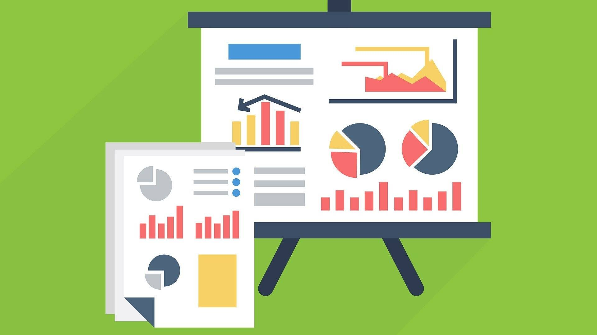
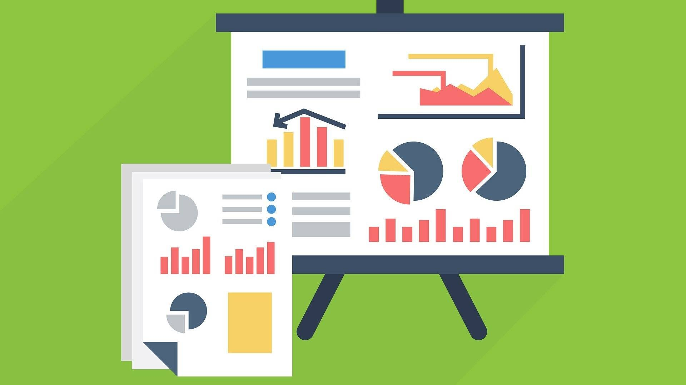

|
|
TIPS & TRICKS |
Sebelum memulai investasi saham, penting untuk memahami konsep dasar seperti apa itu saham, bagaimana cara kerjanya, dan risiko yang terlibat. Pelajari istilah-istilah dasar seperti dividen, capital gain, dan analisis fundamental.


Untuk membeli dan menjual saham, Anda perlu membuka rekening efek di perusahaan sekuritas yang terdaftar dan diawasi oleh OJK. Pilihlah perusahaan yang menawarkan biaya transaksi yang wajar dan layanan yang baik. Beberapa sekuritas memungkinkan Anda membuka rekening dengan modal awal yang kecil, mulai dari Rp 100.000.


Hindari menggunakan dana darurat atau utang untuk berinvestasi. Gunakan hanya uang dingin, yaitu dana yang tidak digunakan untuk kebutuhan sehari-hari. Ini penting agar Anda tetap tenang saat harga saham berfluktuasi.


Jangan menaruh semua modal Anda di satu saham. Diversifikasi investasi ke beberapa saham atau sektor yang berbeda dapat membantu mengurangi risiko. Anda juga bisa mempertimbangkan reksa dana indeks atau ETF untuk mempermudah diversifikasi.
 

Banyak aplikasi investasi yang memungkinkan Anda untuk mulai berinvestasi dengan nominal kecil. Kunci utamanya adalah konsisten, misalnya dengan menyisihkan sebagian dari pendapatan setiap bulan untuk berinvestasi.


Setiap investor perlu memiliki rencana trading yang jelas, termasuk daftar saham yang ingin dibeli, titik masuk dan keluar, serta batasan kerugian yang bisa ditoleransi. Ini akan membantu Anda tetap disiplin dalam berinvestasi.

Investasi saham memiliki risiko yang tinggi. Pastikan Anda memiliki dana darurat yang cukup untuk mengantisipasi kebutuhan mendesak sebelum mulai berinvestasi.